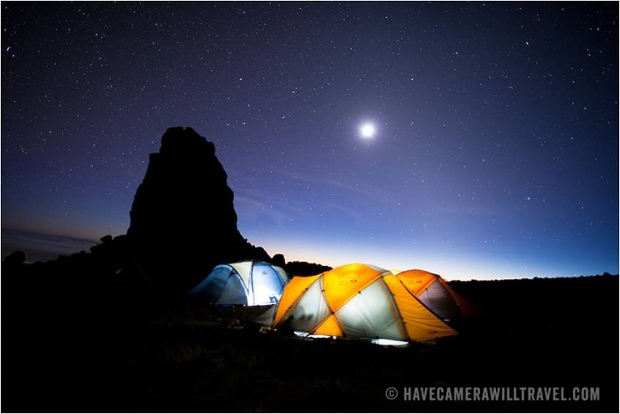
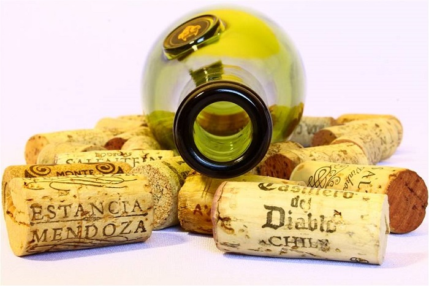

绿植繁茂的森林带，贫瘠的荒地和高山荒漠，美不胜收的冰川带……天然的垂直自然带的变化造就了乞力马扎罗山无可挑剔的沿途景色。
在这众多美景之中，有处存在感超强的地方，它的名字叫熔岩塔（Lava Tower）。今天小爱就来说说它。
（图片来源：David Coleman, Have Camera Will Travel.）
在哪儿？
虽说名字里带个塔字，但其实熔岩塔并不是一座真正意义上的塔，它是一座熔岩组成的巨石。它高91米左右，位于乞力马扎罗山的西南部海拔约4600米左右的地方。
形成
它是当年乞力马扎罗地区火山喷发而形成的，那时候乞力马扎罗山还是朝气蓬勃的小（活）伙(火)子（山）（由于15万年都没有过大规模喷发，现如今乞力马扎罗已经被归类成是休眠火山了）。
"软木塞"
熔岩塔从地质学角度讲是一块巨型火山拴。什么叫火山栓呢？火山栓其实就是堵在火山喷发口的一块堵塞物，类似红酒的软木塞。它的形成是由于岩浆喷发出来后就立刻冷却、固化，而固化后直接把喷发口给堵了。
按常理来说，如果像熔岩塔这种规模的火山栓出现在一座活火山附近，势必会增加地底的压力从而导致更多“凶猛”的喷发；可是因为我们的乞力马扎罗山是个正在休眠中的小公举（休眠火山），所以即使有这么个“软木塞”停留，乞力马扎罗依然一脸“淡定”。
"只可远观不可亵玩"
熔岩塔也是个营地（lava tower camp），选择莱莫绍、翁背、马莎美和希拉路线的童鞋是有机会倚“塔”而眠的（具体行程安排以旅游公司为准，因旅游公司不同，行程安排上也会有小差异）。
但走北麓环线、翁背、马兰谷的童鞋就没那么幸运了：走北麓的童鞋在到达熔岩塔前就已经开始向山的北侧进发了；走翁背的童鞋们是直接起步在北侧完全避开熔岩塔，而马兰谷路线更是起步在东部妥妥地避开那里。总之，不是所有攀登乞力马扎罗山的人都能有幸看到熔岩塔哒。
早些时候，官方还是允许攀登熔岩塔的，但是后来由于安全问题（岩体有松动滚落的危险，而这很可能对攀登者的安全构成威胁），官方已经禁止跋涉攀登了。那些已经攀登熔岩塔的人是幸运哒，因为据说在那里可以远眺乌呼鲁峰。